CFS 操作マニュアル
Circuit / Fixture / Scene / Switch / CFS検査を、プロジェクト単位で作成・検証・改訂・共有するための取扱説明書です。
1. はじめに・起動
- 共有ZIPをローカルフォルダーへ展開します。
LAUNCH_CFS_APP.vbsを実行します。ターミナルは表示されず、起動処理はバックグラウンドで実行されます。- Node.js 20以降が未導入または旧版の場合は、公式LTS版をアプリ専用の
.cfs-runtimeフォルダーへ自動導入し、公式SHA-256値で確認してから使用します。管理者権限やWindowsのシステム設定変更は不要です。 - 初回は依存関係の導入とビルドを行い、完了後にブラウザーが自動で開きます。失敗時は
artifacts/startup/latest-status.txtと同フォルダーのログを確認します。タブレットはプロジェクト選択画面に表示される TABLET URL を使用します。
データの保存先: 下書き・表示設定はそのPCのブラウザーに保存されます。保存済みプロジェクトとRevisionは、導入環境の設定によりPC内の
data フォルダー、またはSupabaseを設定済みの共有データベースへ保存されます。共有ZIPには既存プロジェクトデータを含めません。ネットワーク公開: タブレット接続のためCFSはPCのローカルネットワークから開けます。信頼できない機器が同じネットワークにある場合は、PCのファイアウォールでアクセスを制限してください。
2. プロジェクト選択と基本操作
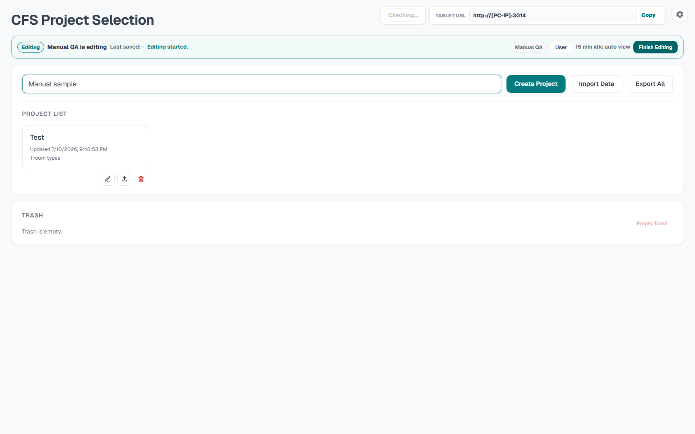
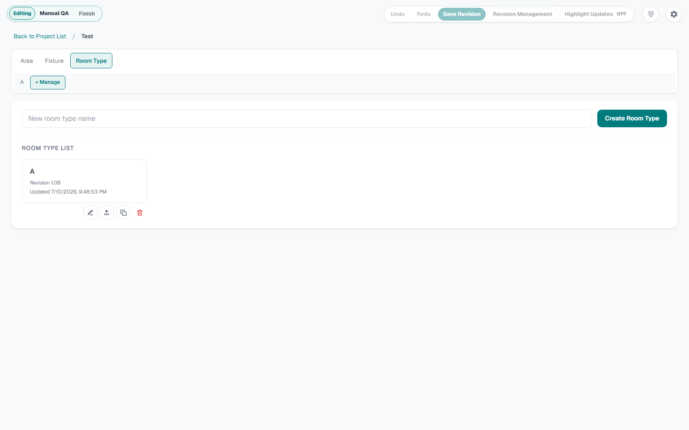
| 操作 | 内容 | 注意 |
|---|---|---|
| New project name / Create Project | 空のプロジェクトを作成します。 | 実案件名を使う場合は共有先の命名規則に従います。 |
| Import Data | Project Exportで出力したJSONを読み込みます。 | 読込前にExportでバックアップを取ります。同じIDのプロジェクトがある場合は、表示される入力欄へU（既存を更新）またはC（末尾に識別子を付けて複製）を入力します。Cancel、またはU/C以外の入力で中止します。 |
| Export All | 現在の全プロジェクトをJSONとして出力します。 | 引き継ぎ・復旧用のバックアップです。 |
| プロジェクトカード | クリックして対象プロジェクトを開きます。 | カード上の更新日時・最終保存者・Room Type数を確認します。 |
| Rename / Delete | 名称変更、またはTrashへ移動します。 | Deleteは即時完全削除ではありません。Trashから確認・復元します。 |
| Export | プロジェクト単位のJSONを出力します。 | 他者へ渡す場合はShare Exportの説明も確認します。 |
| TABLET URL / Copy | 同じネットワークのタブレットで開くURLをコピーします。 | PCとタブレットが同一ネットワークであることを確認します。 |
| 歯車アイコン | Device Masterなどの共通設定を開きます。 | プロジェクト個別設定ではなく、ブラウザー単位の共通設定です。 |
Trashの扱い: Project DeleteはTrashへ移動します。Trash内のRestoreは復元、Empty TrashはTrash内の全項目を完全削除します。Empty Trashの前には必ずExport Allを実行してください。
3. 設定・PDU標準値
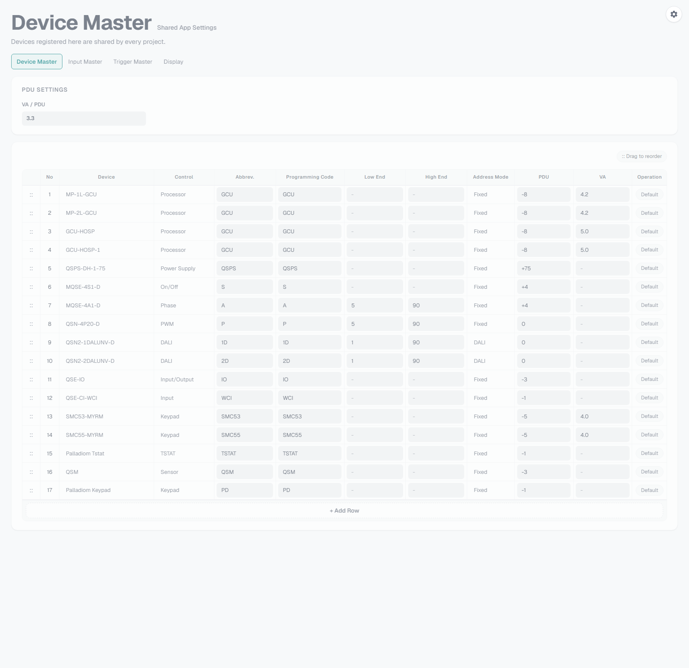
| 設定タブ | 用途 | 主な操作 |
|---|---|---|
| Device Master | 全プロジェクトで使用する機器マスターとPDU基準を管理します。 | No、Device、Control、Abbrev.、Programming Code、Low End、High End、Address Mode、PDU、VA、Operationを編集します。+ Add Rowで追加、ドラッグハンドルで順序変更。画面内のPDU SettingsではVA / PDUを入力し、Enterまたはフォーカス移動で確定します。 |
| Input Master | CCIなどで使用する入力名称の共通候補です。 | 行の追加・削除・並べ替えを行います。 |
| Trigger Master | Switch、PIR、Commandで使用するトリガー候補です。 | 候補名称を管理します。 |
| Display | 表示倍率、管理者用CFS機能を設定します。 | 倍率の変更、Admin Mode、Link Map、リンク値ハイライトを管理します。 |
既にCFSを使っているPCのPDU設定は、アプリ更新で自動上書きされません。統一が必要な場合は各PCで
VA / PDU = 3.3 を設定してください。4. CFSを完成させる標準手順
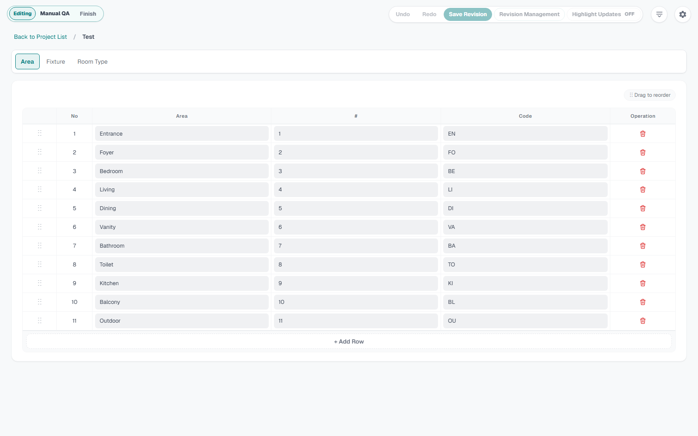
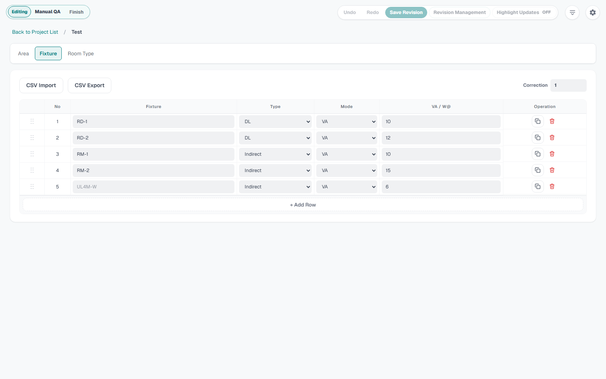
- Projectを作成し、必要なAreaとFixtureを登録します。
- Room Typeを作成します。実際の部屋番号ではなく、共通ロジック単位で作成します。
- CircuitでDesigner #、Dimming Type、Area、Fixture、数量、Detailを入力します。
- Device Assignで回路・ゾーン・DALI・CCI/CCO・HVACを機器へ割り当てます。
- Area Sceneでエリアシーンの値、SceneでRoom SceneとArea Scene選択を設定します。
- Switch / Command / Backlightで操作ボタン、トリガー、バックライトロジックを設定します。
- PDUで機器数量、Fixture VA、PDU収支、必要ブレーカーを確認します。
- CFSで全体表を確認し、必要ならフィルター・列表示・Excel Exportを使用します。
- Save Revisionで改訂を保存します。更新箇所の確認には Highlight Updates を使います。
- 検査が必要な場合は InspectionMode を実施し、終了時にRevisionとして保存します。
設計の順序は「マスター → 回路 → 割当 → シーン → 操作 → CFS確認 → Revision保存」です。CFS表だけを直接埋めるのではなく、原則として元タブの設定を整えます。
5. 各タブの機能
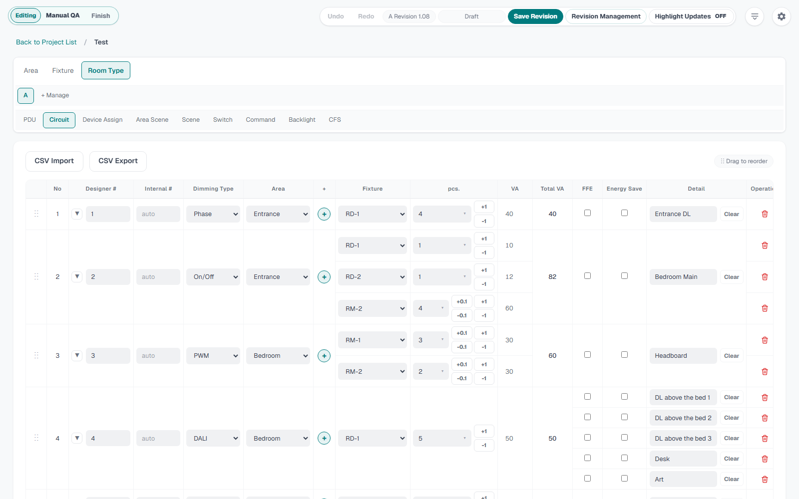
Area / Fixture
Area / Fixtureの操作表を表示
| タブ | できること | 主なボタン |
|---|---|---|
| Area | Area Name、No、色を管理します。SceneやCircuitのArea選択元です。 | + Add Row、行Delete、色選択、ドラッグ並べ替え。 |
| Fixture | Fixture名、種別、VA/W、Power Factorを管理します。CircuitとPDUに反映されます。 | CSV Import、CSV Export、+ Add Row、行Delete。 |
Room Type: PDU / Circuit / Device Assign
3タブの画面例と操作表を表示
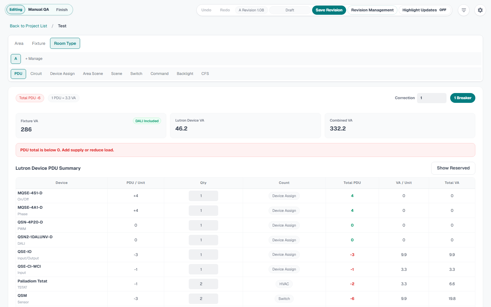
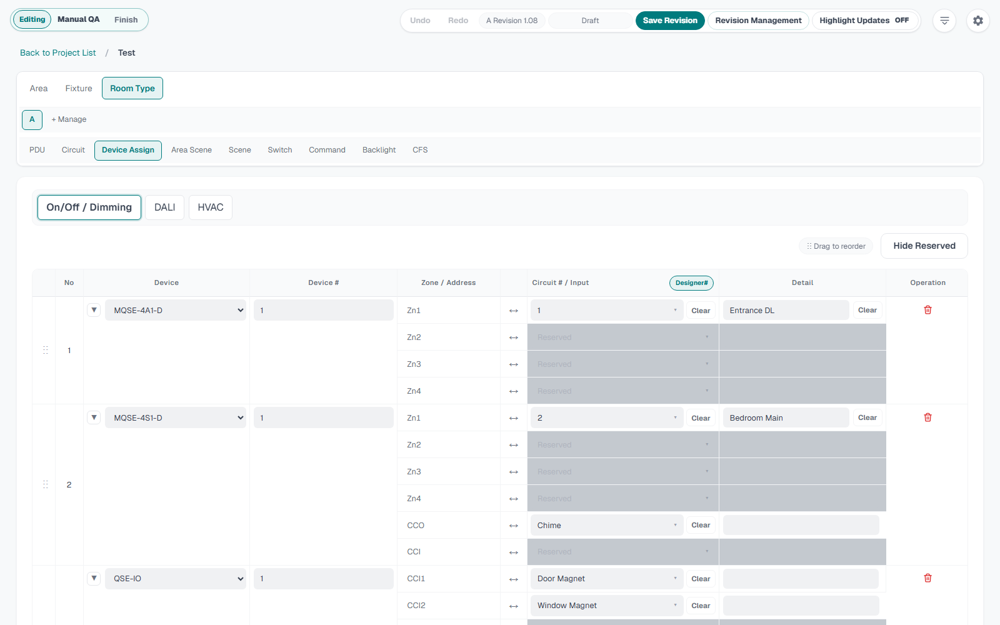
| タブ | 役割 | 操作上の注意 |
|---|---|---|
| PDU | 機器のPDU、手入力数量、Fixture VA、合計電流、ブレーカー数を確認します。正のPDUは供給、負のPDUは消費です。 | Exclude DALIはボタンです。Reserved表示はShow/Hide Reservedで切り替えます。Device Assign由来は自動計上、ProcessorやKeypadなどはManualで入力します。 |
| Circuit | 照明回路の基本情報を作成します。 | 行グループの展開/折りたたみ、+ボタンで枝行を追加。Clearは削除ではなく未割当/Reservedの意味を持つ場合があります。 |
| Device Assign | 機器、Designer #、Zone/Address、Area、CCI/CCO、HVACを割り当てます。 | Reservedは通常の選択肢に戻しません。DALI、CCI/CCO、HVACは割当後にCFSとの表示を確認します。 |
Room Typeの作成・複製・出力・削除
6つの操作を表示
| 操作 | 説明 | 注意 |
|---|---|---|
| Room Type名入力 / Create | 新しい論理Room Typeを作成します。 | 実部屋番号ではなく、共通ロジック単位で作成します。 |
| Room Typeカード | 対象を開き、下段のPDUからCFSまでを編集します。 | Revisionと更新日時を確認します。 |
| Rename | Room Type名を変更します。 | 変更後の名称はExport名にも使用されます。 |
| Copy | Room Type一式を複製します。 | 類似ロジックを作る場合に使います。複製後は名称とCFSを確認します。 |
| Export | Share ExportまたはLD Exportを選択します。 | Share ExportはCFS引き継ぎ、LD ExportはLutron Designer連携用です。 |
| Delete | Room TypeをTrashへ移動します。 | 確認ダイアログの対象を確認して実行します。 |
Room Type: Area Scene / Scene / Switch / Command / Backlight
5タブの画面例と操作表を表示
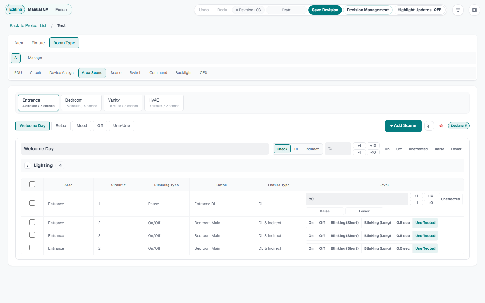
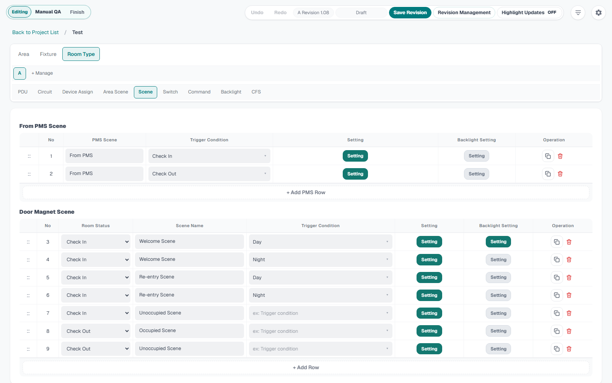
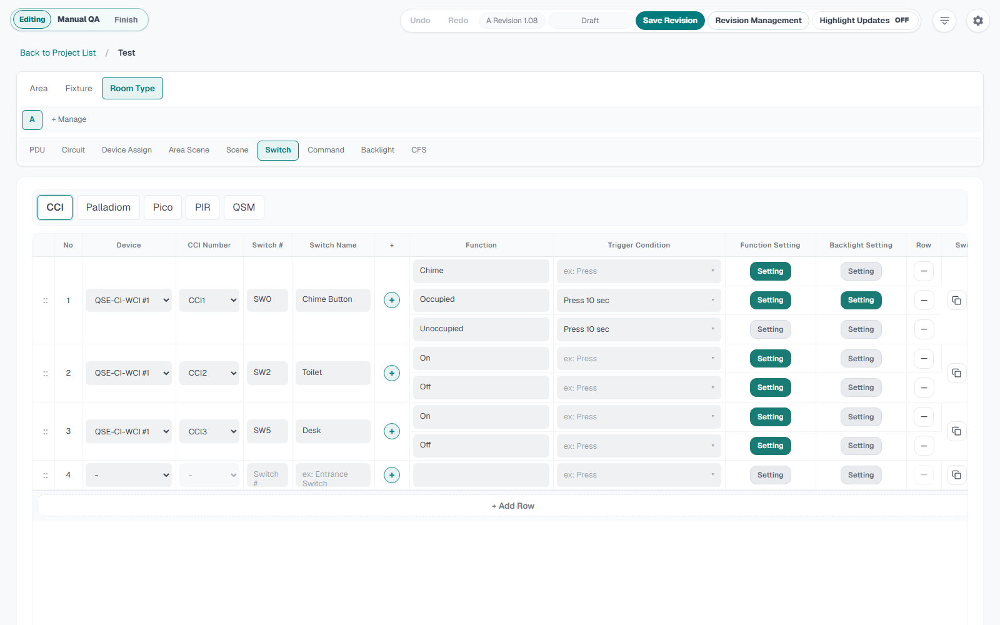
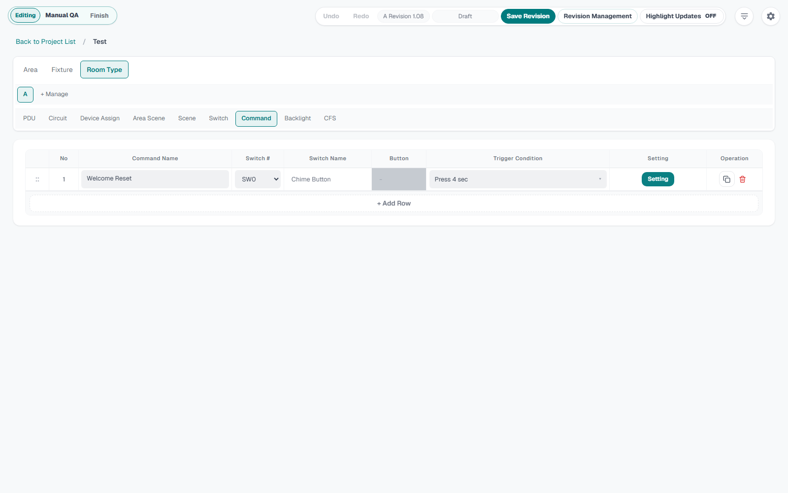
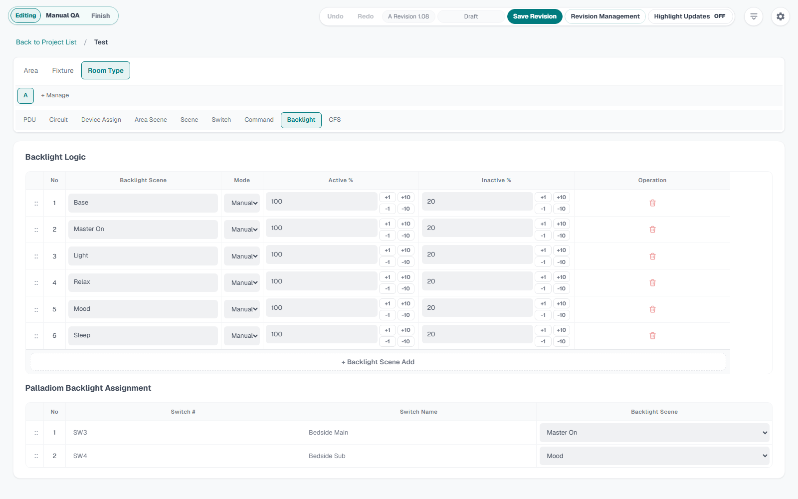
| タブ | 役割 | 主な操作 |
|---|---|---|
| Area Scene | Area単位の明るさ、On/Off、HVAC値を定義します。 | Scene名と各回路値を設定。Scene側の個別値がある場合はそちらが優先されます。 |
| Scene | Check In/Out、Welcome、Re-entry、Occupied/UnoccupiedなどのRoom Sceneを構成します。 | Area Sceneを選択し、必要な個別値のみ上書きします。 |
| Switch | CCI、CCO、Palladiom、Pico、PIR、QSMなどのスイッチ・ボタン機能を設定します。 | ボタン数、Label、Function、Trigger、Function Setting、Backlight Settingを確認します。 |
| Command | Command専用の操作行を設定します。 | Switchと同様にFunctionとTriggerの整合を確認します。 |
| Backlight | Room SceneやSwitchのバックライトターゲットと条件を設定します。 | Backlight LogicはHVACの下に表示される構成を維持します。 |
6. 上部操作、Revision、共同編集
| ボタン・表示 | 内容 | 運用 |
|---|---|---|
| Undo / Redo | 現在の編集セッション内の取り消し・やり直しです。 | 編集権限が必要です。ショートカットはCtrl/Cmd+Z、Ctrl+YまたはCtrl/Cmd+Shift+Zです。 |
| Revision表示 / Draft表示 | 対象Room TypeのRevisionと保存状態です。 | Draftはローカル編集段階です。共有前・検査前にRevision保存を推奨します。 |
| Save Revision | 現在のRoom Typeを新しいRevisionとして保存します。 | InspectionModeのマークを含めた改訂履歴を残す主操作です。 |
| Revision Management | Revision一覧、Update Memo、Restoreを表示します。 | Restoreは履歴を残したまま過去Revisionの内容を読み込みます。 |
| Highlight Updates ON/OFF | 直近Revisionとの差分を各タブ・CFSに強調表示します。 | 変更の有無を確認してからONにします。ボタン幅はON/OFFで変わりません。 |
| 上部を隠すアイコン / Show Top | 上部UIを最小化し、CFSなどの作業領域を広げます。 | 再表示は画面右上のShow Topから行います。 |
| View Only / Start Editing / Finish Editing | 共同編集の閲覧・編集状態を示します。 | 通常表示ではStart Editing、省スペース表示ではEditで編集を始めます。終了は通常表示でFinish Editing、省スペース表示でFinishです。他の人が編集中の場合はその人の終了を待ちます。一定時間無操作なら閲覧へ戻ります。Finish Editing時にDraftがある場合は、Continue EditingまたはSave Revision & Finishを選びます。 |
| ユーザー名 / User | 表示名・メールの登録画面を開きます。 | 省スペース表示ではユーザー名、通常表示ではUserボタンを選びます。Supabase共有環境では、Admin承認済みメールアドレスと一致するMicrosoft職場アカウントでサインインします。画面例のManual QAは登録名の例です。 |
| 共同編集状態 | できること | できないこと |
|---|---|---|
| View Only | 画面閲覧、タブ移動、Export、Revision履歴確認。 | データ編集、Revision保存、Trash変更、InspectionMode編集。 |
| Editing | 通常編集、InspectionMode、Revision保存。 | 他ユーザーとの同時編集。 |
| View Only（Wait表示） | 他のユーザーが編集中であることを確認。 | これは独立した編集モードではなくView Onlyの状態表示です。編集者がFinish Editingするか、無操作タイムアウトでロックが解放されるまで待機します。 |
編集開始時にWait表示となる場合は、他ユーザーが編集中です。強制更新せず、編集者へ終了または保存を依頼してください。ローカル共同編集では表示名・メールは調整用です。Supabase共有環境では、Adminが追加したメールアドレスとMicrosoft Entraサインインで本人確認します。
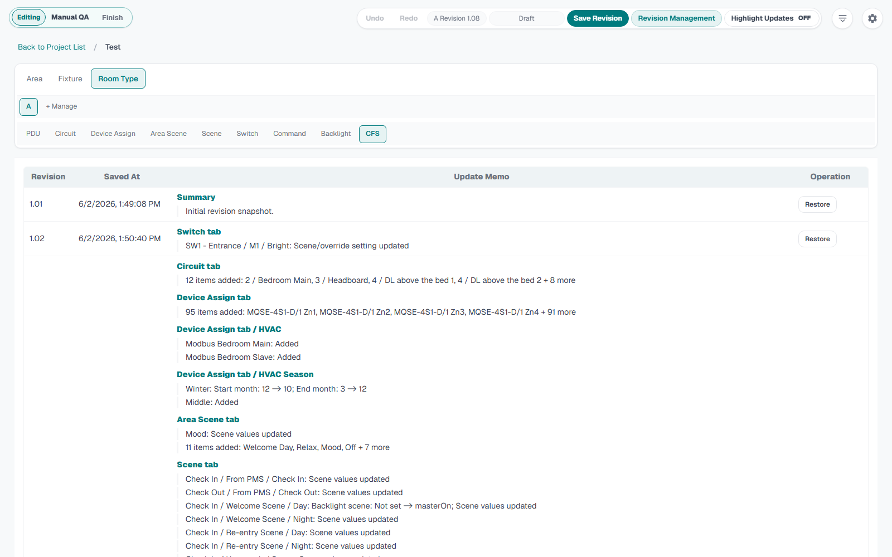
7. CFS表示、抽出、Excel出力
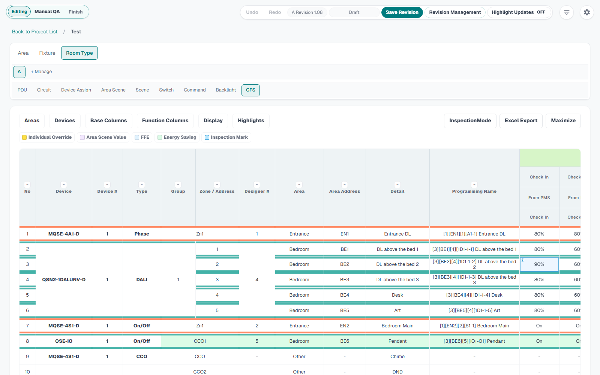
| ボタン | 内容 |
|---|---|
| Areas / Devices | 表示対象のArea・Deviceを絞り込みます。Show all / Hide allで一括切替できます。 |
| Base Columns | No、Device、Area、Programming Nameなどの基本列を表示・非表示・並べ替えします。非表示にしたBase列はBase Columnsメニューから戻します。 |
| Function Columns | Scene、Switch、Command、Backlightなどの機能列をグループ単位で管理します。 |
| Display | 並び順をDevice / Area / Internal# / Programming Nameで切替え、番号表示を調整します。 |
| Highlights | Individual Override、Area Scene Value、FFE、Energy Saving、Inspection Marksの強調表示を確認します。 |
| Excel Export | 現在表示しているCFS表をWYSIWYG形式でExcel出力します。 |
| Maximize | CFS表を最大化します。横・縦スクロールで表示範囲の端まで確認できます。 |
| Link Map（管理者） | CFSのリンク先と診断を確認します。リンク警告がある場合に原因の追跡へ使います。 |
CFSは確認と検査の集約表です。通常の設計変更は元のCircuit、Device Assign、Scene、Switch、Backlightタブで行い、CFSに正しく反映されたことを確認します。
8. InspectionModeの運用方法
原則: InspectionModeは現地検査・指摘修正のためのモードです。開始前にDraftの扱いを確認し、終了時にRevisionへ保存して、誰がどこを変更したかを残します。
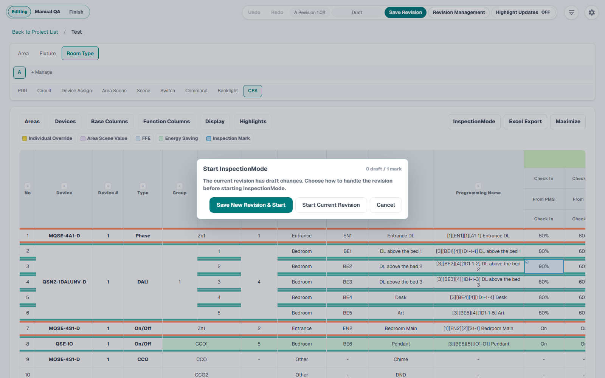
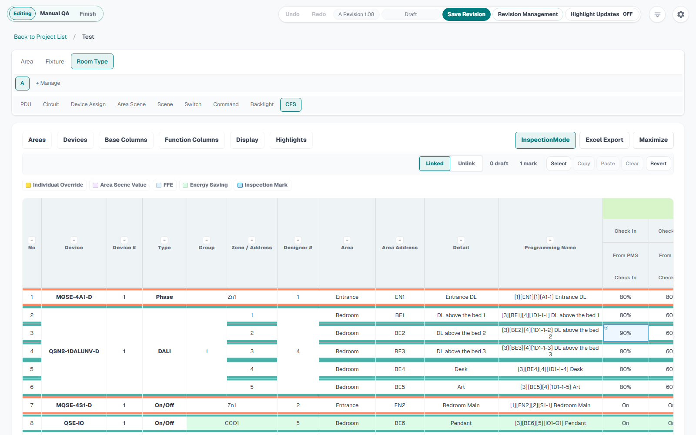
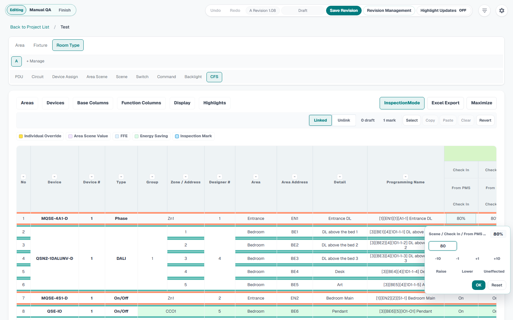
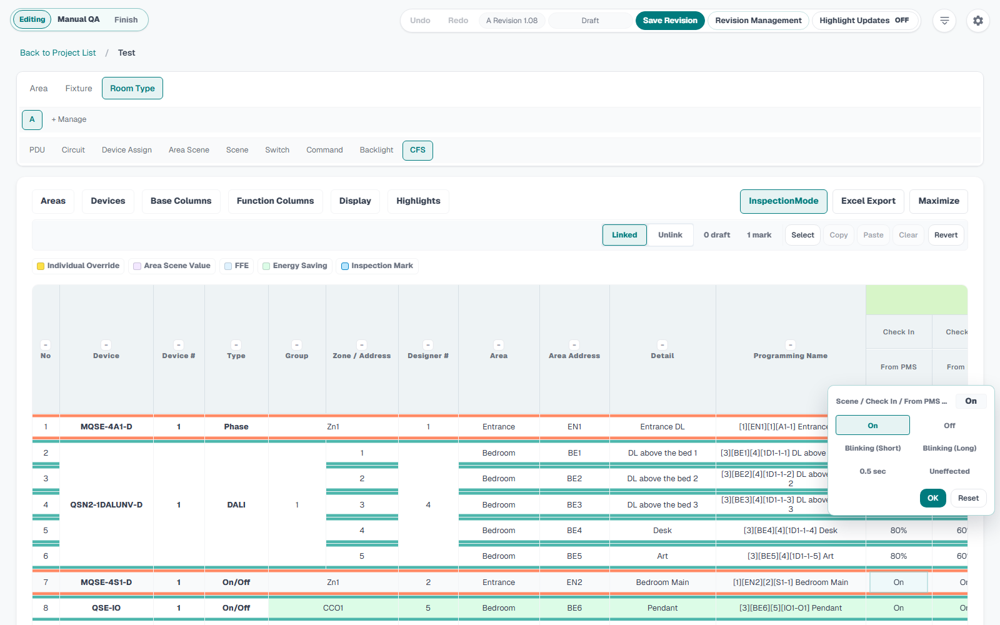
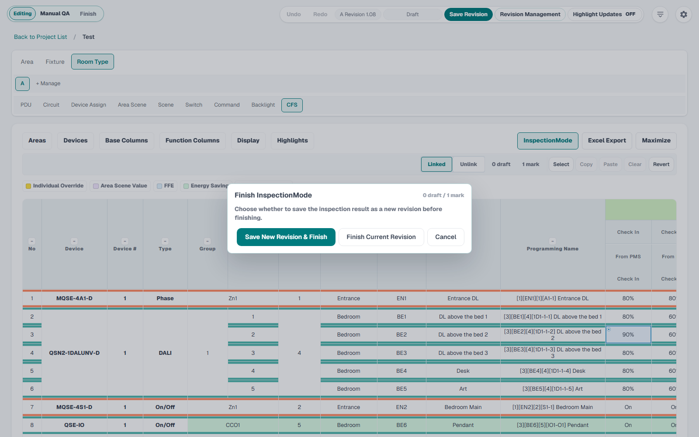
開始から完了まで
- CFSタブでInspectionModeを選択します。
- 開始ダイアログで、新しいRevisionを保存して開始、現在のRevisionのまま開始、Cancelから選びます。Draftがある場合は保存してから開始することを推奨します。
- 編集対象セルを選択します。Area Scene由来の値は標準でリンク対象へ反映されます。
- セルに重なって開く編集ボックスで値を変更します。右上は変更前の値です。
- OKでセル内の変更を確定、ResetでそのセルをInspectionMode開始時の値へ戻します。
- 必要に応じてSelect、Copy、Pasteで単一セルまたは範囲を複写します。
- Revert（操作バー）を使うと、そのInspectionMode全体を開始時点の状態へ戻し、InspectionModeも終了します。
- InspectionModeを終了し、終了ダイアログでRevision保存の有無を選びます。Save New Revision & Startで開始した場合、終了時はFinish Current Revisionのみ表示され、新規Revisionの再保存は行いません。Inspection MarksのHighlight表示は開始時と終了時に有効になります。終了時にInspectionModeで変更したセルは自動でInspection Markとして記録されます。
InspectionMode操作バー
| 操作 | 説明 |
|---|---|
| Linked | Area Scene値を共有するリンク対象をまとめて変更します。標準モードです。 |
| Unlink | 選択したCFSセルだけを個別Overrideとして書き込みます。リンクを広げたくない場合に使います。 |
| Select | 最初のセルを選択します。選択中はSelecting、Copy後は貼付先を選ぶTargetと表示されます。もう一度別セルを選択すると範囲選択になります。 |
| Copy | 選択した1セルまたは範囲をコピーします。 |
| Paste | 対象セルを起点にコピー内容を貼り付けます。 |
| Clear | 選択範囲とコピー内容を解除します。 |
| Revert | InspectionModeを開始した時点の状態に、セッション全体を戻してInspectionModeを終了します。 |
| Inspection Mark | 操作ボタンではありません。InspectionModeを終了したときに変更したセルへ自動記録されるマークです。Inspection MarksのHighlight表示は開始時と終了時に有効になり、変更箇所を追跡できます。通常のSave Revisionでは既存マークがリセットされます。 |
セル編集の種類
| 対象 | 編集方法 | 選択肢 |
|---|---|---|
| 調光値（%） | 数値入力、またはオーバーレイの操作ボタン。 | -10 / -1 / +1 / +10、Raise、Lower、Uneffected。 |
| On/Off | オーバーレイから状態を選択。 | On、Off、Blinking (Short)、Blinking (Long)、0.5 sec、Uneffectedの6択が表示されます。 |
| CCI / HVAC | InspectionModeで編集不可の対象があります。 | 入力欄がない場合は元タブで変更します。 |
検査完了後は、開始時と終了時に有効になるInspection MarksのHighlight表示と Highlight Updates ON を確認し、更新箇所・Update Memo・Inspection Markを確認してから共有します。開始ダイアログはDraftの有無にかかわらず表示され、Draftがある場合は保存の必要性を明示します。
9. 共有、Export、Lutron Designer
| 出力 | 用途 | 内容 |
|---|---|---|
| Project Export / Export All | CFSプロジェクトの引き継ぎ・バックアップ。 | JSON。受け手はImport Dataで読み込みます。 |
| Room Type Share Export | Room Type単位の共有。 | 論理Room Type、Circuit、Scene、Switchなどを共有します。 |
| LD Export | Lutron Designer連携用JSON。 | 論理Room TypeをLDへ渡すためのJSONです。LD Export画面ではSummary、Warnings、JSONを確認してからCopy JSONまたはDownload JSONを選びます。実部屋番号・フロア展開・テンプレート再割当はCFSの対象外で、Lutron Designer側で行います。 |
| CFS Excel Export | 表示中CFS表の提出・レビュー。 | 現在の列・絞り込み状態を反映したExcelです。 |
Export前にはRevisionを保存し、必要ならHighlight UpdatesをONにして差分を確認します。機密情報を含むJSONやExcelは、送付先と保管場所を確認してから共有します。
10. アプリ更新とデータ保護
| 項目 | 内容 |
|---|---|
| Update通知 | Project Selection画面で更新が利用可能な場合に通知します。 |
| Update開始 | 確認後に更新を開始すると、進捗・現在の処理・割合を示すオーバーレイが表示され、画面操作は停止します。 |
| 更新処理 | Git確認、データバックアップ、取得、依存関係同期、ビルド、再起動の順に実行します。この機能はGitリポジトリとしてcloneした環境でのみ動作し、ZIP配布版には適用されません。 |
| 完了 | 更新完了後は自動再読込します。失敗時はログ表示と再読込を使います。 |
更新中はブラウザーを操作せず、完了まで待機します。更新パッチには利用者の
data フォルダーを含めません。更新前のProject Exportも推奨します。11. 困ったとき
| 状況 | 確認 | 対応 |
|---|---|---|
| タブレットで開けない | TABLET URL、同一ネットワーク、PC側CFS起動状態。 | PCのURLを再コピーし、Wi-Fi隔離やファイアウォールを確認します。 |
| 編集できない | 上部のView Only、他ユーザーのEditing表示。 | ユーザー登録後にEditを選択。別ユーザーが編集中なら終了を待ちます。 |
| CFSで値が見えない | Areas / Devices / Base Columns / Function Columnsの絞り込み、非表示列、Highlight状態。 | Show allを使い、元タブのCircuit / Scene / Switch設定とLink Mapを確認します。 |
| Inspection変更を戻したい | セル単位かセッション全体かを判断。 | セル単位は編集オーバーレイのReset、セッション全体は操作バーのRevertを使います。Revertは開始時点へ戻した後、InspectionModeを終了します。 |
| Revisionを保存し忘れた | Draft表示、Finish Editing時の確認ダイアログ。 | Save Revisionで保存してから終了します。 |
| Microsoftサインインできない | Microsoftサインイン画面へ進めない、またはCFSでアクセス拒否されます。 | Supabase AuthのAzure provider、リダイレクトURL、Entraテナント設定を確認します。CFS側ではAdminが対象メールアドレスを有効なViewer/Editor/Adminとして追加済みか確認します。 |
| PDU値がPCごとに違う | SettingsのVA / PDU。 | 共有基準の3.3へ統一し、Device MasterのPDU / VAも確認します。 |
| 共有データベースへ保存できない | Supabase接続を設定した環境か、接続設定が正しいかを確認。 | 接続設定を見直してCFSを再起動します。共有ZIPには接続設定を含めないため、未設定のPCはローカルのdataフォルダーへ保存します。 |
毎回の終わり方: CFS確認 → 必要な検査 → Save Revision → Highlight Updatesで差分確認 → Export/共有、の順にすると履歴と検査結果を追跡できます。
12. 用語
| 用語 | 意味 |
|---|---|
| Room Type | 実部屋番号ではなく、共通する照明・制御ロジックの単位です。 |
| Area Address / Programming Name | CFS上で機器・Area・回路を識別する表示情報です。長期的なリンク識別子として手入力変更しません。 |
| Draft | 現在のRevisionへ未保存の編集状態です。 |
| Revision | 後から比較・復元できる確定スナップショットです。 |
| Inspection Marks | InspectionModeで変更したセルを示すマークです。 |
| PDU | 電源配分を確認する単位です。CFSの共有初期値は1 PDUあたり3.3 VAです。 |
| Share Export | Room Typeの設計内容を他のCFSへ引き継ぐためのJSON出力です。 |
| LD Export | Lutron Designerへ論理Room Type情報を渡すためのJSON出力です。実部屋番号の展開は含みません。 |
| Collaboration | 編集者の表示名と編集ロックで共同作業を調整する機能です。Supabase共有環境では、Admin承認済みメールアドレスとMicrosoft Entraサインインで本人認証も行います。 |
| Supabase | 保存済みプロジェクトとRevisionを共有できるクラウドデータベースです。接続設定がない環境ではローカル保存を使います。 |
| Uneffected | 制御値を変更しないことを示すCFS固有の表記です。スペルを変更しません。 |
| Reserved | 未使用・保留の対象です。通常のDevice Assign選択肢としては扱いません。 |